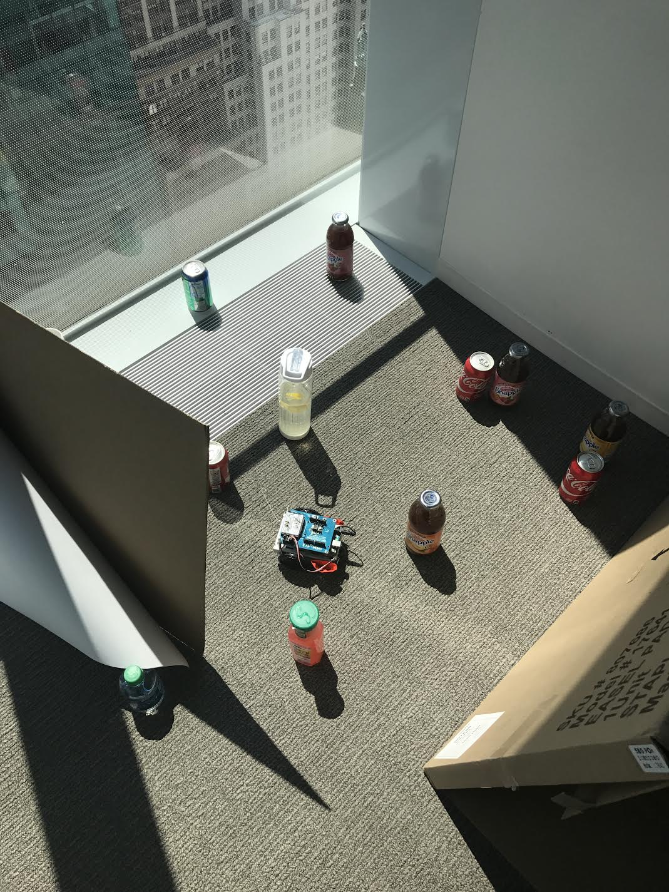

Hi, my name is Chloe.
This is my website. Welcome! I was born/used to live in New York City, but my family and I moved to a small town in Long Island when I was 2. I have one younger sister and one younger brother. My sister was born in 2003 and my brother in 2010. I am almost 16 years old.
Likes:
Playing tennis, badminton, and bowling
Social media (Snapchat and Instagram)
Shopping and Fashion
Spending time with friends and family
Travelling
Italian food
Disikes:
Whenever people chew with their mouths open
Bugs
Cheetos and other snacks with artificial cheese
Mouse over this to learn more about me

The picture above shows a game I created/coded on Scratch with Bian. We made a paddleball game, using a dinosaur and dragon as the paddles and the earth as a ball. We made this in the Bank of America Girls Who Code location.
